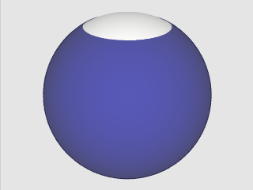

This is a very simple region consisting of a single convex of one halfspace. For most users, a circular search area is best described by the center and radius rather than an offset of the cutting plane. The API has ways of creating Halfspaces like this, given the RA/DEC in degrees and the radius of circle expressed in arc minutes.
|  |
| Figure 2. 3600 arc min wide halfspace |
using Spherical;
/* .... */
namespace MySpace {
public class MyApp {
public void MyFunc(){
Region r = new Region(new Convex(new Halfspace(0.0, 90.0, 1800)), false);
/* ... */
}
public void MyAlternate(){
Region r = new Region();
Convex c = new Convex();
Halfspace h = new Halfspace(0.0, 90.0, 1800);
c.Add(h);
r.Add(c);
}
}
}